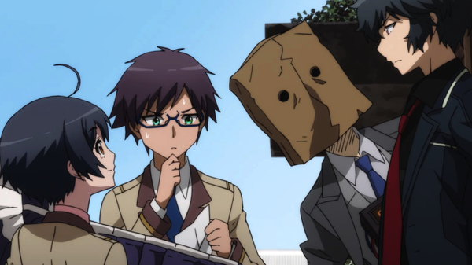

"Rampo Kitan - Game of Laplace" is something of a sleeper hit... that isn't really a hit. I try to follow industry news and can typically at least recognize an anime by its title or promotional poster, even if I hadn't yet seen it. However, "Rampo Kitan" and it's American Blruay release seemed to come out of nowhere. A mystery-thriller, my initial reactions to it were: "... never heard of it, surprised it exists... wait, Funimation licensed it?... wait, they dubbed it?" (at the time, they were experimenting with releasing sub-only Blurays, and weren't as aggressively releasing home video copies of every show they owned, so it was a genuine surprise for a show that had so little press).The series is (very) loosely based on the works of deceased mystery author Edogawa Ranpo. It's become increasingly common for "famous" writers to have prominence in anime, but foreign-language writers, especially from Asia, remain inaccessible to Western audiences that grew up on Arthur Conan Doyle, Robert Louis Stevenson, and H.G. Wells (and perhaps the odd French writer, like Victor Hugo or Jules Verne). As a disclaimer, I haven't read any of Rampo's works. The modern anime has several subtle and not-so-subtle references to his stories, and while it might help to know the source, it isn't entirely necessary to watch and enjoy the show. As to the other "English" words in the title, "Kitan" likely translates to just "Tales," although the translation can vary wildly just in Japanese, and in other countries, the word can also appropriately mean "it never ends." The word "Laplace" refers to a mathematical notion invented by a scientist of the same name, but in the context of the anime, refers to "Laplace's Demon," a theoretical idea of a demon that can predict the past and future values of anything, assuming some degree of deterministic law for every atom in existance, and the ability to track it. That definition has some part to play in the show's final act, spread over about half the episodes. Background aside, I went in blind to watch a crime-mystery show featuring some bright teenagers. Kogoaro Akechi is the lead, a cool older teen that skips school to work as a brilliant detective, scarfing down pain pills like American drama "House M.D.," with the martial arts-skills of Robert Downey Jr.'s "Sherlock Holmes," and a bit of the mind-palace-concentration of BBC's "Sherlock" (there's a ton of Western influence here, both from classic Sherlock stories and modern series). After the show's first crime involving a dismembered teacher, Kobayashi (a student passed out at the scene with weapons in hand) is the prime suspect, and he doesn't mind: bored with everyday life, he claims this is the most excited he's ever been, and works with Akechi to solve the crime, and thereon works as his assistant and protoge (against Akechi's will). There's also Soji, Kobayahsi's best friend and class rep, who tags along to look after his friend's reckless behavior. There's some wild characterization at work in "Rampo Kitan." Kobayashi, for example, is confirmed to be a boy, but has the lean, feminine appearance of a girl. This isn't just a passing remark made by the show, but actually has a part to play. One murderer who falls in love with young women is suspected to have fallen in love for Kobayashi as his next victim. The very next mystery requires him to cross-dress as a girl to bring out a murderer abducting children. Aside from just being convenient, the boy appears to enjoy it, even occassionally dressing as a girl when not needing to, much to his friend's embaressment (Soji is indeed JUST a friend, but clearly his feelings are tested against their limits to whether he feels more than that). It doesn't help that the show's camera likes to focus on his butt, like an anime might on a girl for other shows. It's a strange choice overall... I like the originality, but it would have been easier to just imagine Kobayashi as a girl that typically dresses in pants rather than the other way around, or if he was purposely left as gener-non-specific (of course, a woman voices him in the English and Japanese dubs, further confusing the viewer). It doesn't end with just Kobayashi or Akechi. One background character, an easy-going old-timer cop, constantly clutches as his chest like his ribs are broken, an odd trait that is never explained. One accomplice regularly featured is "Shadow Man," a potential pervert who hasn't actually committed any crimes, but known for being a "gentleman thief and master of disguise," he regularly wears a salary-man's white shirt and tie, and a paper bag over his head to hide his true face. And then there's "Black Lizard," a woman with a fixation on Akechi, locked in a luxurious underground cell in S&M bondage gear, tied up in wires... whenenver they visit her for assistance and her knowledge of the underground world, she squeals at Akechi's insults, peeing a steaming puddle on the ground in ecstasy. We haven't even gotten to the crime scenes yet, and it's clear: this show ain't for kids. Anime is known for getting eccentric with side character traits and designs, but "Rampo Kitan" goes far with it. I wondered if the original stories would have provided some context, but given how much modernization is used, it's unlikely. It helps to make the show more memorable, but it would have been nice to have a bit more context. As it is, it feels like one or two episodes are missing.  Anyway, this is a crime-thriller, and a surprisingly violent one. The first murder involves body limbs placed to look like a human chair, and a subsquent story involves a child abducter who, does in fact, kill some of the girls he steals. It's gruesome and disgusting. Not any more so than your average American primetime crime show, but hard to watch nonetheless. The weird part is when humor is thrown in (episode 6 is a riot), sometimes at complete odds with the gore being described. A lot of the thematic elements feel very "Danganronpa"-esque. After a few short mysteries, the bulk of the show focuses on the man called "20 Faces," a mased vigilante that kills criminals the police failr to throw in prison, a la "V for Vendetta." The explanation to how the persona came to be involves a computer program that could predict, and perhaps influence, the world in precise ways, an element so far-fetched and unnecessary that it almost ruins the story. The whole arc is surprisingly political, against both government and news media: it supposes that as many as half of captured murdered get off under the "insanity" plea, not even going to trial due to prosecutors not wanting a loss on their record. After faking mental problems and then acting rehabilitated in a hospital, they're free in a matter of months, only to kill again, get caught again, and for the process to repeat in a broken system. While the problems might be real, it's a dangerous philosohpy and doesn't really have a decent ending, either from a story perspective or to explain why recklessly killing those who deserve it is wrong. There's a lot to unpack in my description of the show, and it might sound like I didn't like "Rampo Kitan." But on the contrary, I liked it. I liked it very much.Good mystery anime are hard to come by, often focusing on the thriller aspect with no clues for the viewer to uncover themselves, or going in the opposite direction and having no urgency or excitement. "Rampo Kitan" manages to find a better balance than most other anime, with crimes and methods to solve them that wouldn't be out of place in one of Doyle's stories (or at least in an episode of "Death Note," another great thriller), with compelling or horrific motivations behind the killers, and reminders that lives are constantly on the line. As bizarre as the characters and the humor is, I did laugh often, and ultimately liked the characters. Flaws there may be, but this is a fun show, with only the grisly details of the victims hampering my enjoyment. The production values also impressed me. No, the animation isn't great, no better than the average broadcast anime. Character designs have cool uniforms and occasionally odd quirks for each of them, but are rendered in a very workman-like way. However, the art is otherwise sublime, with some incredible background shots in certain scenes, and a moody red color palette. Some interesting directorial choices, like having characters explain their theories by acting them on a stage (complete with curtains and spotlights) make the show look far better and more interesting than it should. From Kobayashi's point of view, most of the background characters are greyed-out shadows, only coming into focus when they introduce their name and become relevant to him or the story, and from the perpsective of the other anti-social intellitectual characters, a similar method is used (for Akechi, the grey shadows are replaced with wooden faceless mannequins). Not only is this an effective production shortcut, but it's an effective way to portray how each character focuses, or doesn't focus, and their general disinterest in people; suffering from a similar perspective (difficulty remembering names or faces until I have to, etc.), I applauded the show's ability to render the idea.A strong musical score would have helped top off the production, especially since it actually has a role in some of the scenes, with the use of calming English ballads used by Akechi on his home jukebox. I'm usually easy to please with the music too... but while it set the mood, I never quite liked it as much as I thought I would.Specifically produced to celebrate the "50th anniversary of the passing" of celebrated Japanese writer Edogawa Rampo, I'm certain "Rampo Kitan - Game of Laplace" has very little to do with the works it was inspired by. But it's made me very interested to read the stories myself. And perhaps that was always the intention, to introduce some of the smart scenarios and characters to modern-day audiences transfixed by attention-grabbing colors and designs used in the "Persona" or "Danganronpa" games, with all the fun, silly and stupid anime tropes you'd come to expect. The series is kind of broken, but it was bizarrely fun and intriguing enough for me to greatly enjoy it, as if a bunch of seemingly random parameters came together in exactly the right way to reach this outcome.
- "Ani" More reviews can be found at : https://2danicritic.github.io/ Previous review: review_Ramayana_-_The_Legend_of_Prince_Rama Next review: review_Redline